Overview
A pre-trained visual encoder gives a robot policy one summary of everything in view. Most of that summary has nothing to do with the task, and none of it survives once the camera moves away.
These two papers build the policy's input around the objects a task names instead. A language model reads the task description and lists the relevant objects, and vision foundation models find and track them.
- HODOR decomposes one image into the scene, the task-relevant objects, and their parts, so a policy sees detail only where the task needs it.
- Scene graphs carry those objects through space and time. Each object keeps a 3D position after it leaves the camera's view, so a policy can act on something it saw hundreds of steps earlier.
Papers
-

Task-Oriented Hierarchical Object Decomposition for Visuomotor Control
Jianing Qian, Yunshuang Li, Bernadette Bucher, Dinesh Jayaraman. CoRL 2024.
-

Expanding Spatial and Temporal Context for Robotic Imitation Learning With Scene Graphs
Jianing Qian, Qinhe Peng*, Emmanuel Panov*, Leonor Fermoselle, Dinesh Jayaraman**, Bernadette Bucher**, Tarik Kelestemur**. CVPR 2026.
* Equal contribution. ** Equal advising.CVPR open accessarXivSupplementCodeOriginal project pageBibTeX
HODOR
Hierarchical object decomposition for task-oriented representations. Given a task description, HODOR identifies the relevant objects and parts, then builds three layers of slots from coarse to fine: the full scene, the task-relevant objects, and their parts. It trains no new representation. Everything comes from existing vision and language foundation models.
Policy
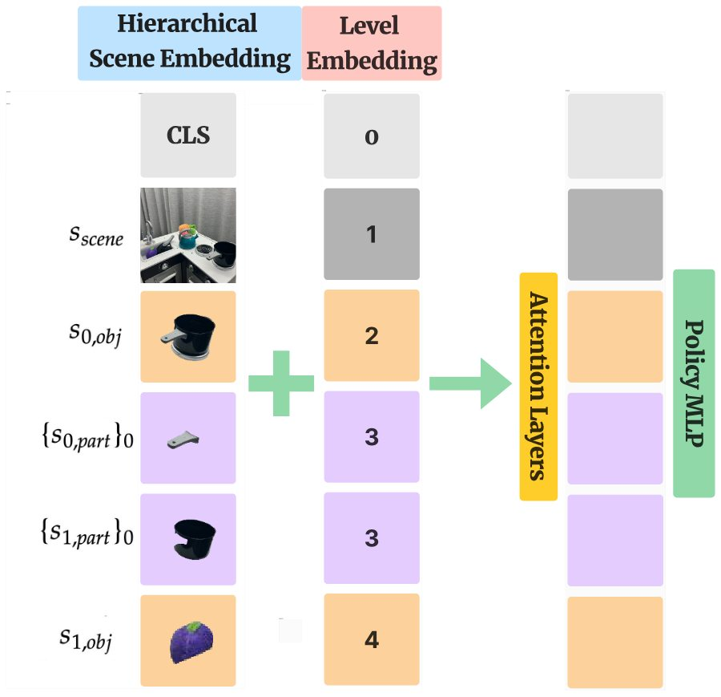
Each slot at each level becomes one input token to a transformer policy. Self-attention handles variable-sized, unordered sets without modification, and a learnable level embedding marks which layer of the hierarchy each slot belongs to.
Simulated tasks
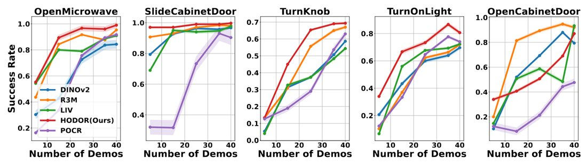
Real robot tasks
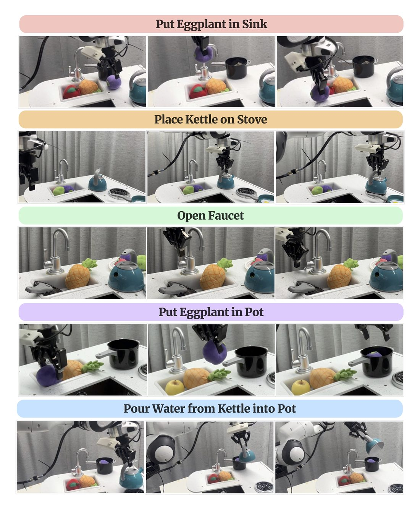
Successes out of 75 trials, summed over the five tasks, with scenes matching the demonstrations (in domain) and with changed scenes (out of domain):
| Method | In domain | Out of domain |
|---|---|---|
| HODOR | 64 | 49 |
| DINOv2 | 58 | 18 |
| LIV | 36 | 3 |
| R3M | 33 | 2 |
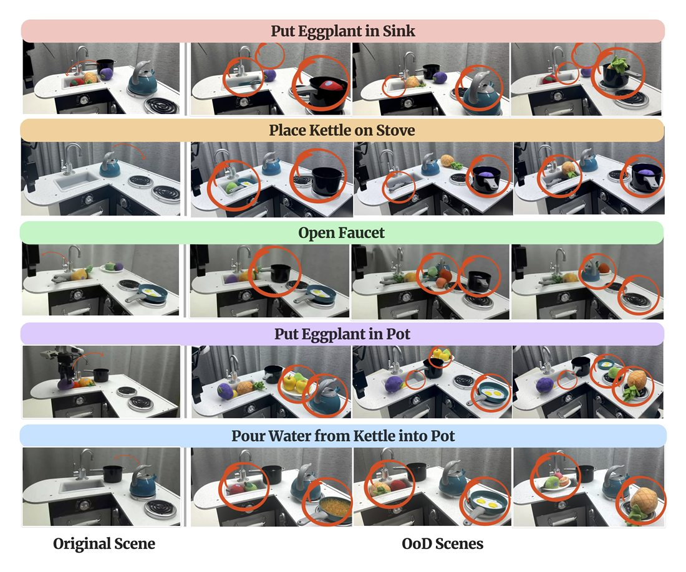
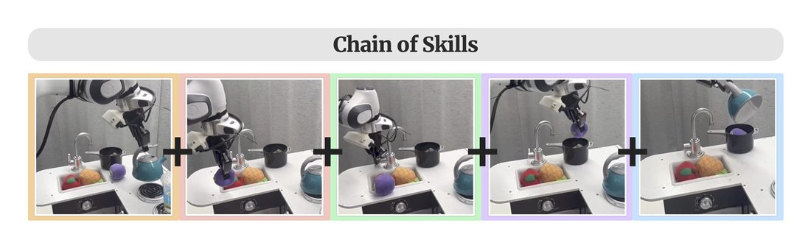
Scene graphs
Partial observability limits imitation learning at large spatial scales and long time horizons. We maintain a task-driven scene graph online and condition a transformer-based diffusion policy on it. Each object is a node holding a visual embedding, a 2D bounding box when visible, and a 3D centroid in a shared frame. When an object leaves the view, its box is cleared and its centroid stays.
Simulated mobile manipulation with Spot
Three multi-step tasks in MuJoCo combine navigation and manipulation. Heat-up Tea runs around 300 timesteps and Heat-up Tea Long around 1000. A policy has to remember how it opened the microwave hundreds of steps later.
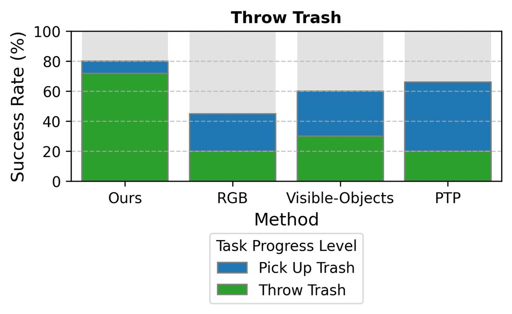
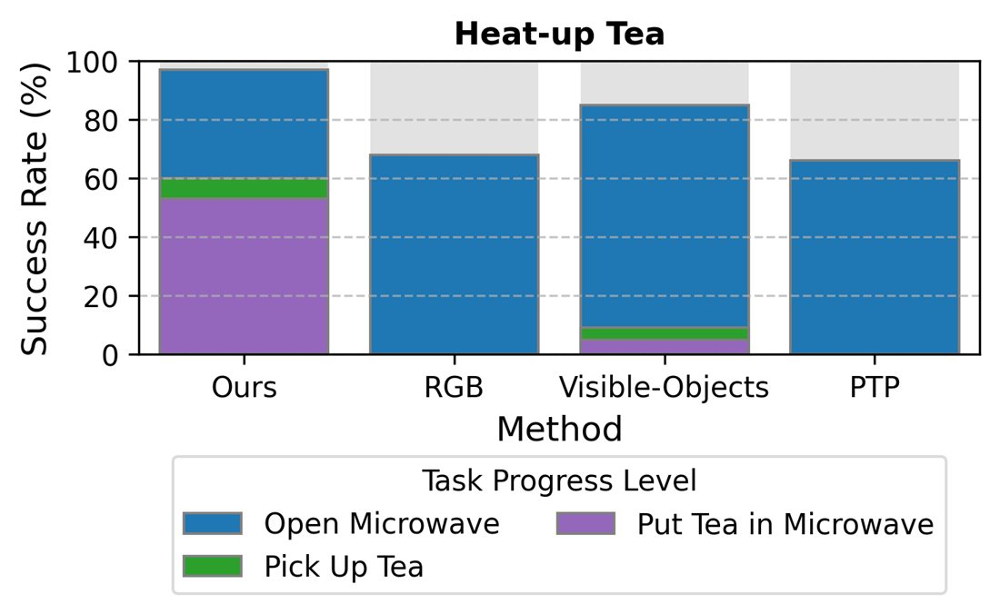
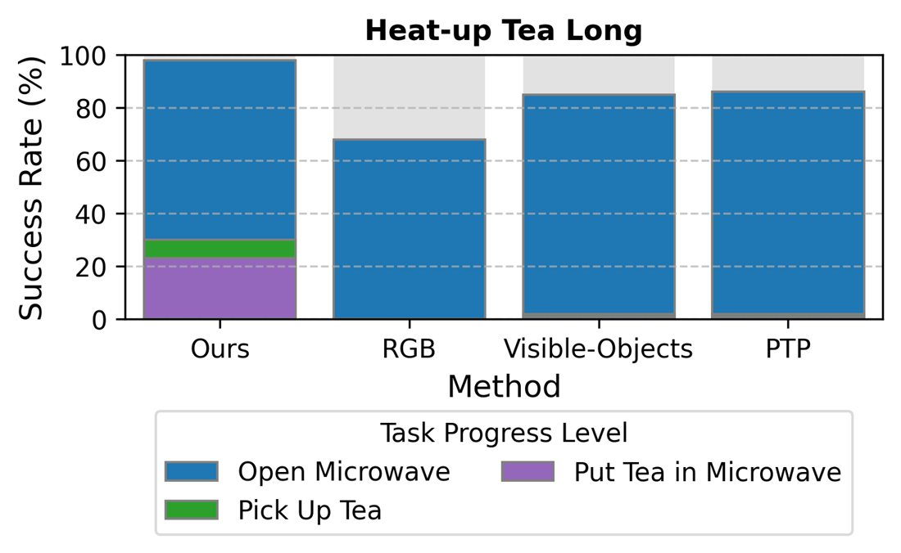
Bars stack progress through subtasks, and the lowest segment is full task success. Baselines are an RGB diffusion policy, a policy using only currently visible objects, and PTP, which adds history frames.
Real tabletop manipulation with Franka
The only camera is on the wrist, so the scene leaves view as the arm moves. Each task uses 300 teleoperated demonstrations.
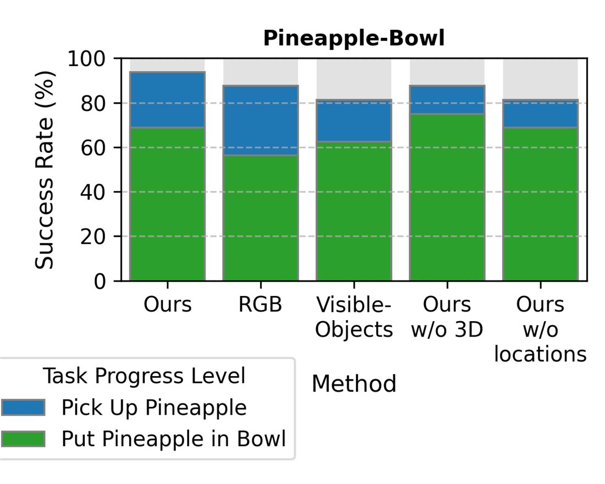
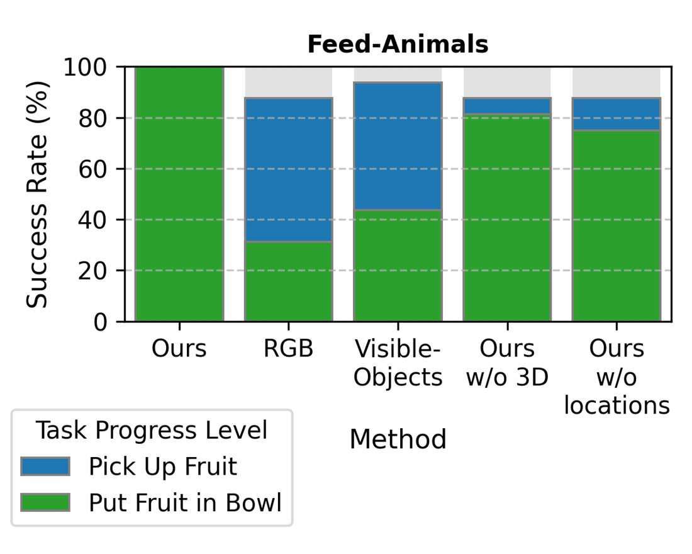
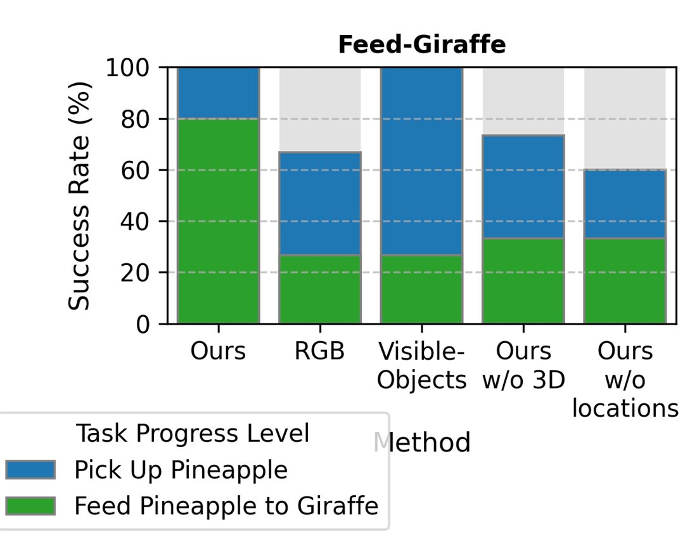
Across 64 real-world episodes, segmentation failed in 4 and object enumeration and tracking did not fail. Most failures came from the imitation policy in long-horizon settings. The policy runs at 3.5 to 3.8 Hz on a single NVIDIA 3090 GPU.
Cite
@inproceedings{qian2024hodor,
title = {Task-Oriented Hierarchical Object Decomposition for Visuomotor Control},
author = {Qian, Jianing and Li, Yunshuang and Bucher, Bernadette and Jayaraman, Dinesh},
booktitle = {Conference on Robot Learning (CoRL)},
year = {2024}
}
@InProceedings{Qian_2026_CVPR,
author = {Qian, Jianing and Peng, Qinhe and Panov, Emmanuel and Fermoselle, Leonor and Jayaraman, Dinesh and Bucher, Bernadette and Kelestemur, Tarik},
title = {Expanding Spatial and Temporal Context for Robotic Imitation Learning With Scene Graphs},
booktitle = {Proceedings of the IEEE/CVF Conference on Computer Vision and Pattern Recognition (CVPR)},
month = {June},
year = {2026},
pages = {28010-28020}
}
Acknowledgements
This work was supported in part by NSF CAREER Award 2239301, NSF Award 2331783, ONR award N00014-22-1-2677, and DARPA under Grant HR00112490421 (TIAMAT).
Videos and the scene graph code come from the authors' scene graph project page and repository.